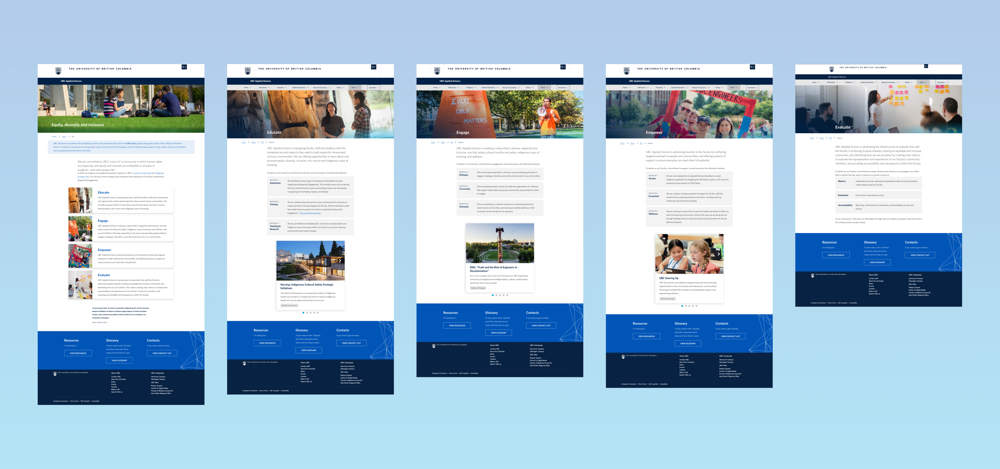
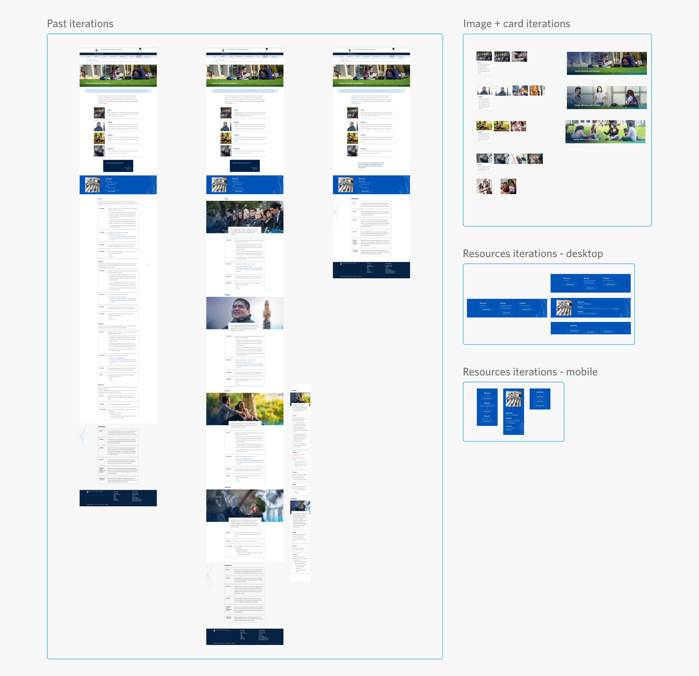
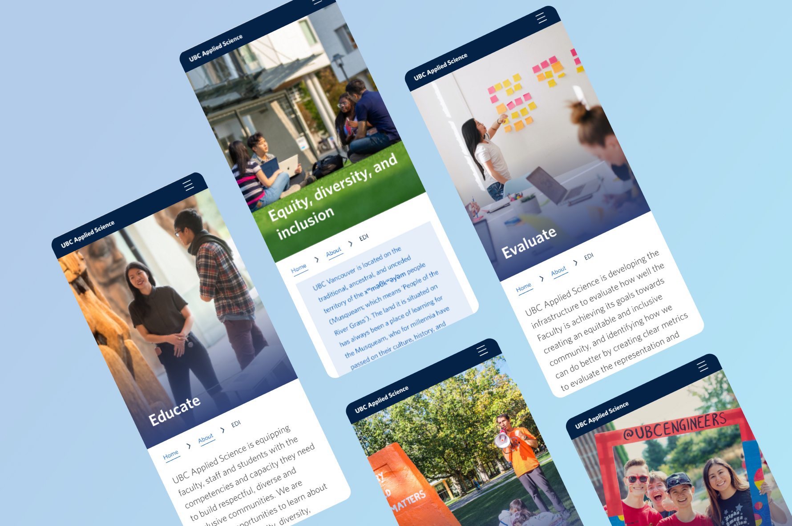

UBC Faculty of Applied Science - Equity, Diversity & Inclusion (EDI)
How might we emphasize equity, diversity & inclusion within the UBC APSC community?
Project details
Product: EDI Website (https://apsc.ubc.ca/EDI)
Role: UX/UI Designer
Tools: Figma
Timeline: 2 months
Team: Reginald Sacdalan, Rob Driscoll, Tony Wu, Ailish Stratham, Dana-Lyn Mackenzie, Sheryl
Staub-French, Jessica del Rosario
Building a respectful and inclusive community
The purpose of this project was to design a website that creates a relationship of trust and inclusivity within the UBC Faculty of Applied Science (APSC). We wanted to support diversity within our community by providing examples of our initiatives to embed equity into our curriculum, along with resources for our faculty, staff and students to learn more about Equity, Diversity & Inclusion (EDI) principles.
Research
I communicated with the website stakeholders to define the copy content for this website. They originally provided a list of what content to include on the website, and I continued to iterate upon this with the stakeholders to ensure that the text was digestible for users, while still conveying a message that aligned with our values.
I also did a comparative analysis with other EDI websites, mostly from other universities. I took note of the components that we might be able to use in our design based on our current branding and design system, as well as content that we might want to add, such as spotlight features for EDI events/initiatives.

Design
I started with low-fidelity sketches to propose ideas for the page layout, allowing for quick iteration and efficient communication of my design proposals. After finalizing the layout with the stakeholders based on the content hierarchy and user personas developed, I began creating mid-fidelity mockups.
I was also in constant communication with our developers, asking them about the feasibility for any newly proposed components or functionalities - this allowed me to revise my designs step by step, and avoid having to make large adjustments that could delay the project.
Past iterations:

After finalizing the mid-fidelity mockups, I moved onto designing high-fidelity mockups, applying branding and components from our design system (http://apsc-designsystem.sites.olt.ubc.ca/), which I also lead the design for. I also added the new components we created for this project, such as the slider on each key value page which provides examples of UBC APSC’s initiatives.
As always, I kept mobile in mind when designing each page, and created each design for both mobile and desktop interfaces to ensure that they were scalable.

Chalenges & limitations
UBC APSC has a common look and feel that was predetermined before this website and our design system were created. This inherently put certain limitations on what we could do with the design, but also helped me learn how to both redesign and create new designs by working with what we have, and making improvements where we are able to do so.
We were also conducting multiple projects, such as the redesign of our entire main online platform (https://apsc.ubc.ca/) during this time, so our small team of developers and myself, as the only designer, were limited for time. We didn’t get enough time to test the site with users as we were focused on other areas of our main project, but this helped me understand the importance of communicating with both developers and site stakeholders constantly - I allowed the stakeholders to freely comment on Figma whenever they had an idea or suggestions, and this really helped move the design forward despite us having to work remotely.